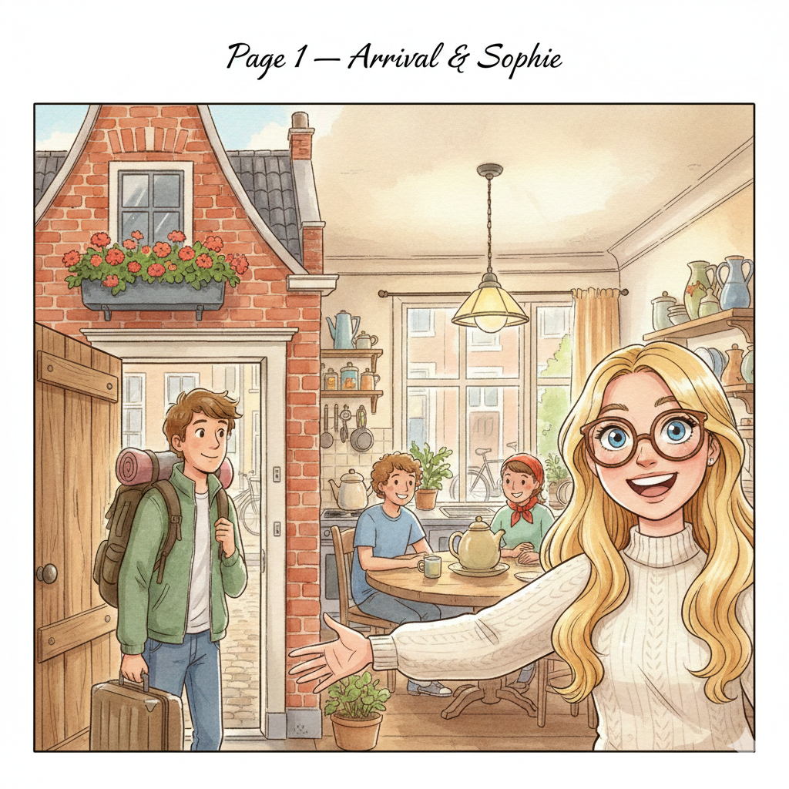
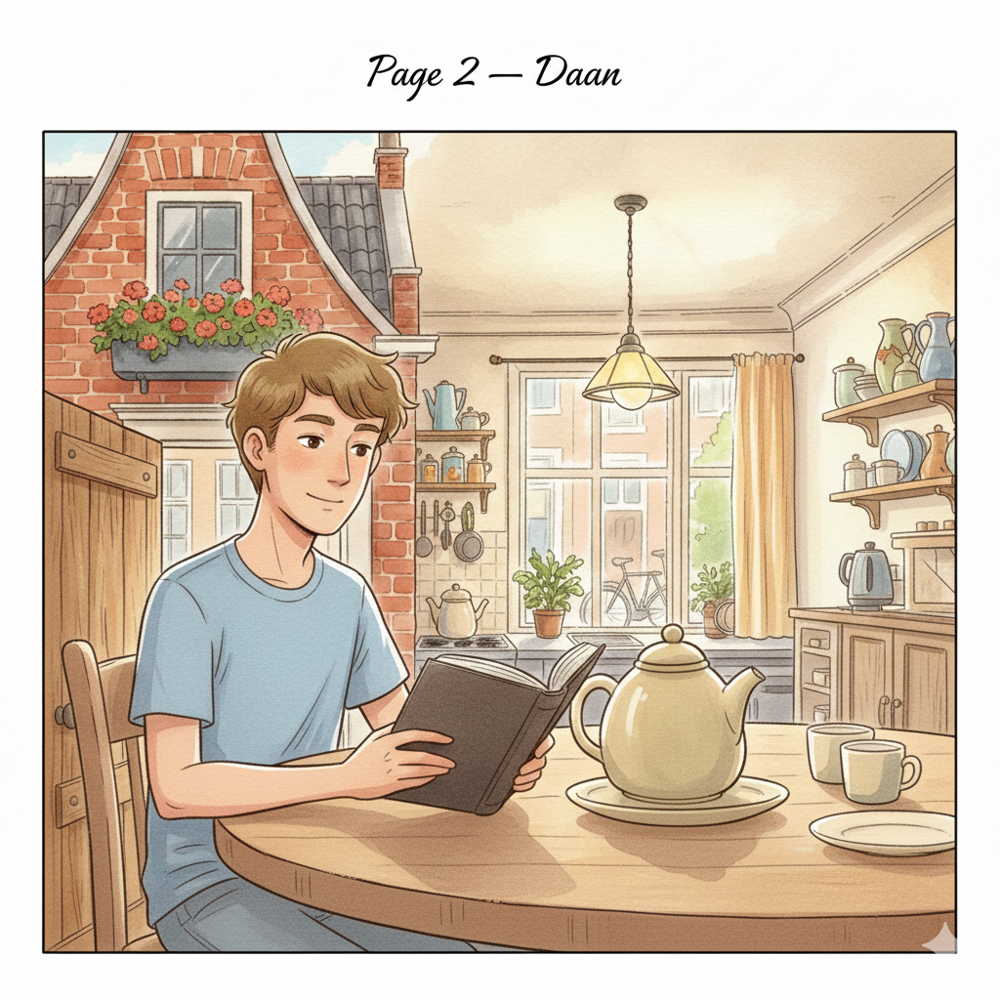
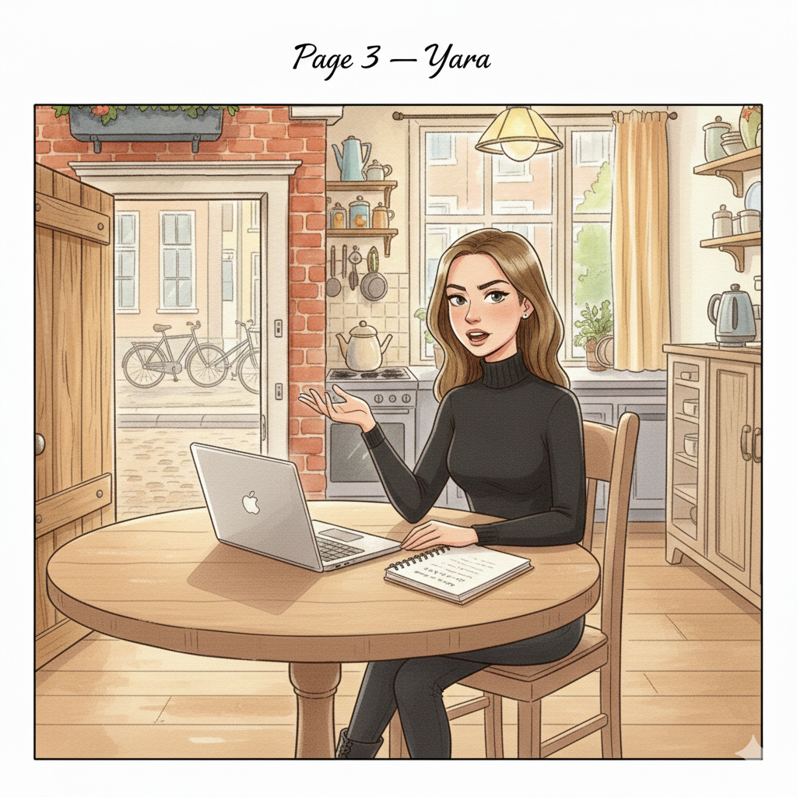
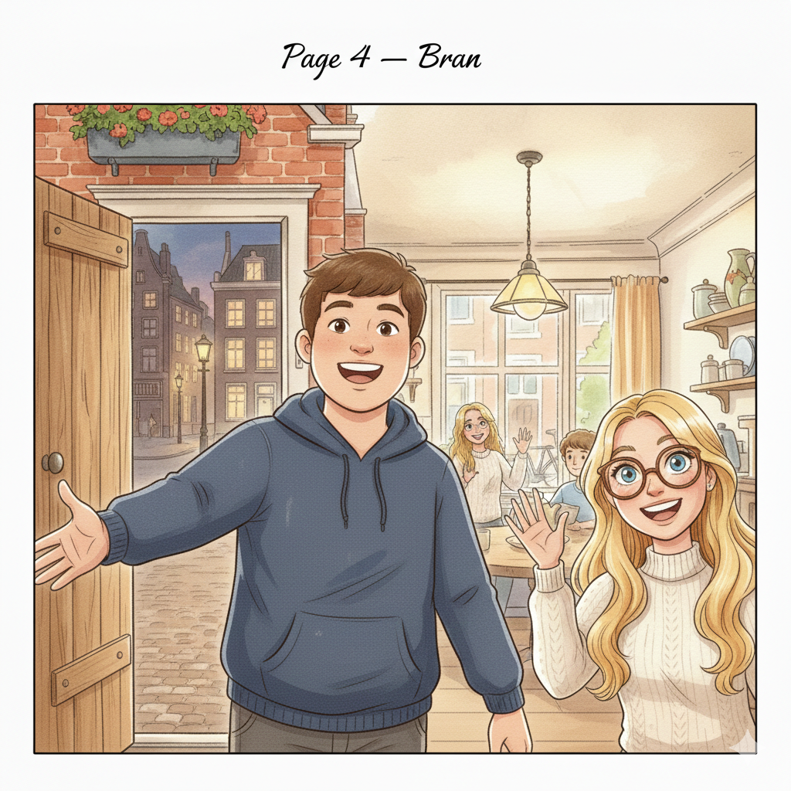
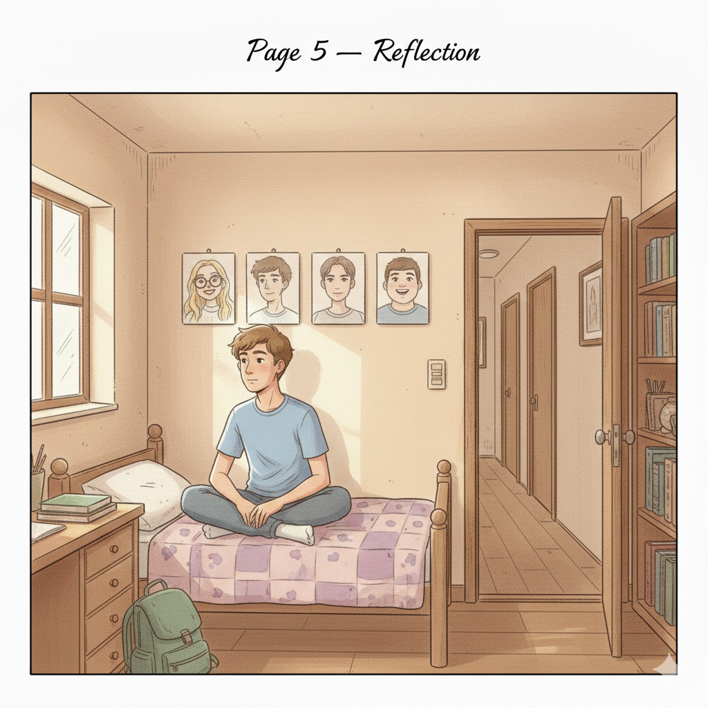

De eerste dag — Woorden uit Thema 8 (pagina 22)
Twee maanden geleden heb ik een advertentie gezien op internet: "Kamer vrij in studentenhuis, centrum Utrecht." Ik heb me meteen aangemeld.
Vandaag is mijn eerste dag. Ik sta alleen voor een groot, oud huis. Ik ben blij, maar ook een beetje nerveus. Ik moet me aanpassen aan een nieuw leven met vier andere mensen. Dat is best een ervaring!
Ik open de deur. In de keuken zitten drie mensen aan de tafel. Ze kijken allemaal naar mij.
De eerste is Sophie. Ze is extravert en praat meteen heel druk.
Sophie heeft lang, blond haar en blauwe ogen. Ze draagt een bril met een breed, bruin montuur. Sophie studeert kunst — ze is heel creatief. Bovendien is ze emotioneel: ze toont haar emoties altijd direct.
Sophie zegt: "Welkom! Ik ben zo blij dat je er bent! We hebben lang gewacht!"

Maar haar kamer... Dat is een catastrofe. Er liggen overal allerlei spullen. Het is chaotisch. Sophie ergert zich daar niet aan. Andere mensen wel.
Naast haar zit Daan. Hij is heel anders dan Sophie. Daan is gesloten en afwachtend. Hij heeft kort, donkerblond haar en bruine ogen. Hij is lang en dun.
Daan zegt niet veel, maar hij lijkt betrouwbaar en eerlijk. Hij studeert filosofie en houdt van diepzinnige gesprekken.
Daan zegt: "Hoi. Welkom." Dat is alles. Hij is bescheiden.
Ik denk: hij is evenwichtig. Niet egoïstisch, niet eigenwijs. Gewoon rustig.

Dan is er Yara. Haar kan ik het beste beschrijven als ambitieus en direct. Ze zegt eerlijk wat ze denkt — soms een beetje bot. Ze heeft donkerblond haar, is slank en draagt dagelijks dezelfde zwarte kleding. Yara combineert haar studie met een baan. Ze is heel druk.
Yara zegt: "Heb je bezwaar tegen lawaai? Bram maakt veel herrie."
"Wie is Bram?" vraag ik.
"Onze vierde huisgenoot. Hij is ergens in de stad," zegt Sophie.

Later die avond komt Bram thuis. Hij is breed en een beetje dik. Hij heeft een grote glimlach op zijn gezicht. Bram is gastvrij en emotioneel — hij geeft me meteen een hand en zegt: "Hey! Welkom! Ik heb gehoord dat je uit het buitenland komt. Geweldig!"
Bram is niet conservatief. Hij is avontuurlijk en houdt van culturele activiteiten — bijvoorbeeld concerten en festivals. Hij belooft dat hij zal koken voor iedereen. Hij geniet van koken.
Maar Yara zegt: "Bram, je bent belachelijk. Je kookt nooit! Je bent te lui!"
Bram is niet boos. Hij lacht en zegt: "Dat is niet eerlijk. Ik ben flexibel — ik kan ook bestellen!"

Ik kijk rond. Vier heel verschillende mensen. De een is extravert, de ander gesloten. De een is creatief en chaotisch, de ander ambitieus en eigenwijs. Ze hebben niet veel gemeenschappelijke eigenschappen.
Ik denk: dit wordt een avontuurlijke ervaring. Ik moet geduldig zijn en me aanpassen. Dat is niet gevaarlijk — maar het is wel anders dan alleen wonen.

Niet in woordenlijst Thema 8 (pagina 22), maar wel in dit verhaal:
| Nederlands | Русский | English |
|---|---|---|
| de huisgenoot | сосед по дому | housemate |
| de keuken | кухня | the kitchen |
| het montuur | оправа (очков) | frame (glasses) |
| de kunst | искусство | art |
| de spullen | вещи | stuff, belongings |
| de herrie | шум | noise |
| het buitenland | заграница | abroad |
| het concert | концерт | concert |
| het festival | фестиваль | festival |
| bestellen | заказывать | to order |
| de glimlach | улыбка | smile |